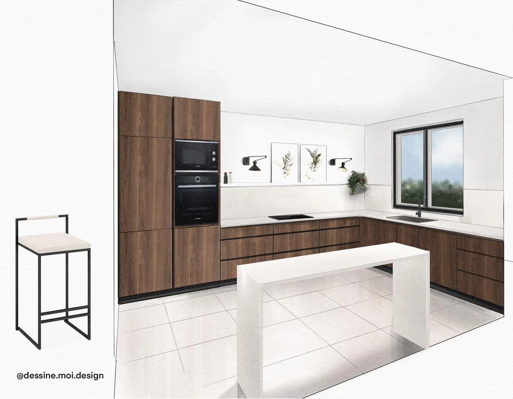

We continue the visit of this house in the dining room. A beautiful and large room with its
magnificent period
fireplace.
I present to you the kitchen in this country house. We always find this green color in the square
zelliges, a double
sink, the concrete floor, the facades in wood veneer.
Quite often I draw sketches for interior designers and decorators. Indeed it allows the client to
project himself more
easily. Me, it allows me to participate in the process of creating a piece. It is very rewarding
especially when it
comes to a customer who comes from another country (like in these pictures - from Ireland).

I love drawing lofts, these interiors with the high ceilings, with the raw textures, with this
light... I don't know if
I would live with pleasure in a loft, but on the drawing or photos, I love it.
Last year I had the chance to work on the renderings of this magnificent mansion in the countryside. I
will share the
drawings of this project in the next posts. The work is in progress… I am impatiently awaiting the
results.
Converting a basement into an office.
Create a shot of your customers with an interior design.
When you're lucky to have a client who wants color.
Here I wanted to show you how you can win a project thanks to pretty visuals. In today's world you
have to be extremely
fast and efficient to capture the attention of customers and to position yourself before others, with
a great
product/project.
Here the project of a meal and rest area for a company.
The project of a meal and rest area.
All-white bedroom, handmade sketch on Procreate.
I really like the white color in the bedrooms, it reflects the light and expands the space. The white
sheets bring a
feeling of cleanliness and radiance. I love how white combines with wood and plants. It creates a
clean and relaxing
atmosphere.
Sketch of a teenager's room. I am completely seduced by this room with black colors. üñ§
I am currently working on the speed of the sketches. At first I could spend hours drawing and
correcting a drawing, now
I try to go faster and not use the eraser or "reverse". The result is a more lively sketch. I'm pretty
happy with the
result.
Proposal for a small bedroom-box where the client wishes to have a 160cm double bed and a desk. By
putting the bed
against the window we gain the precious cm2 üòÉ
Like what, sometimes you can create cozy rooms even in a very small space.
Another little terrace to draw on #procreate. I hope you are enjoying this beautiful sunny Sunday.
When the weather is nice like today, I want to draw the terraces.
The drawing of this kitchen was made a year ago, I just wanted to share it here with you.

You can easily and simply choose the color of the tabletop:
1 - all white;
2 - all black.
You can easily and simply choose the color of the tabletop:
1 - all white;
2 - all black.
When I started designing this bedroom in the countryside I was not very inspired. I'm not a fan of
vintage atmospheres
where we use the objects already present. But little by little I started to put everything together,
and I must say that
it has become my favorite design for quite a while.

Freehand visualization for a wedding shop üíç
Barn-House, plan and projected elevation made on Ipad and Procreate.
An eco, wooden and inexpensive house. Here is a barn-house or barn house that has been very trendy in
recent years. With
its particular shape of roof and with a minimalist decoration.
Barn-House, plan and projected elevation made on Ipad and Procreate.
An eco, wooden and inexpensive house. Here is a barn-house or barn house that has been very trendy in
recent years. With
its particular shape of roof and with a minimalist decoration.
Minimalist bathroom for a second home in the mountains.
To make this drawing on Procreate I used a white 3D model and the textures chosen by the designer.
I've been dreaming of this modular bookcase from @ampmfrance for a while It's so elegant and would fit
well in my room
üòç Maybe this year I'll finally afford it ‚ù§Ô∏è Do you like it? Drawing done in a photo-realistic manner.

Elevation, post-production to see before. Which atmosphere of the sky do you prefer? Fair weather or
cloudy? No more
need for Photoshop to work on your plans and elevations. Just an iPad and a stylus are enough.
Creation of an atmosphere collage for this stay - kitchen from a plan and inspirational photos. The
advantage of
Procreate is to be able to draw and integrate the photos in the same document and all that without
going through
Photoshop.
Creation of a mood collage on an existing photo.